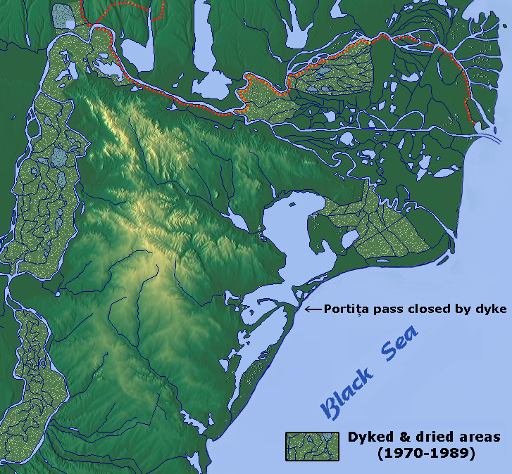

Informații geografice
Delta Dunării este limitată la sud-vest de podișul Dobrogei, la nord de cel al Basarabiei, iar în est se varsă în Marea Neagră. Delta Dunării este traversată de paralela de 45° latitudine N și de meridianul de 29°, longitudine E. La nord, brațele Chilia și Musura formează granița cu Ucraina. Delta ocupă, împreună cu complexul lagunar Razim-Sinoe 5050 km², din care 732 km² aparțin Ucrainei, Deltei românești revenindu-i o suprafață de 2540 km². Este încadrată de limane și lacuri adiacente și cuprinde sute de lacuri între brațe, dintre care câteva zeci de mari dimensiuni. Datorită celor 67 milioane de tone de aluviuni aduse de Dunăre, Delta Dunării crește anual cu aproximativ 40 m².
Dunărea, ajunsă la Pătlăgeanca se bifurcă: Brațul Chilia la nord și Brațul Tulcea la sud, braț care mai apoi, la Furca Sfântu Gheorghe (în turcește Çatal Çedırlez uneori transcris în română „Ceatal Sf. Gheorghe”) se desparte în Brațul Sulina și Brațul Sfântu Gheorghe.
Brațul Chilia, formează granița cu Ucraina, și transportă pe cursul său, de o lungime de 104 km², 60% din apele și aluviunile Dunării.
Brațul Sulina este situat în mijlocul Deltei și, spre deosebire de Chilia, are un curs rectiliniu, fiind permanent dragat și întreținut pentru navigația vaselor maritime. Are o lungime de 71 km și transportă 18% din volumul de apă al Dunării. Cursul Brațului Sfântu Gheorghe este orientat spre sud-est, și se desfășoară pe 112 km, transportând 22% din debitul Dunării. La vărsare formeaza insulele Sacalin considerate un început de deltă secundară.
Delta Dunării (cu excepția deltei secundare a brațului Chilia) face tradițional parte din Dobrogea, dar în Antichitate și Evul Mediu litoralul se afla mult mai la apus (între Chilia Veche și Murighiol pe vremea lui Strabon, între Periprava și Lacul Dranov în epoca bizantină), astfel încât hărțile istorice care reprezintă Dobrogea cuprinzând toată Delta actuală, sunt geomorfologic false.
